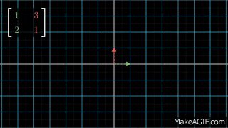

Think of the unit vectors (1,0), (0,1) as the basis for the standard xy plane
- Your goal is to drag and drop the green basis vectors (i' and j') to apply a transformation on the grid that maps blue on to red
- It may be a rotation, reflection, or scaling, or all three
- i' acts on the x component of blue and j' acts on the y component of blue, together they form a 2x2 matrix
- Click "Go" to see how the current orientation transforms the space
- Click solve to see the correct transormation (solution not unique)
- Try to make the light blue (image) vector land on the red point
